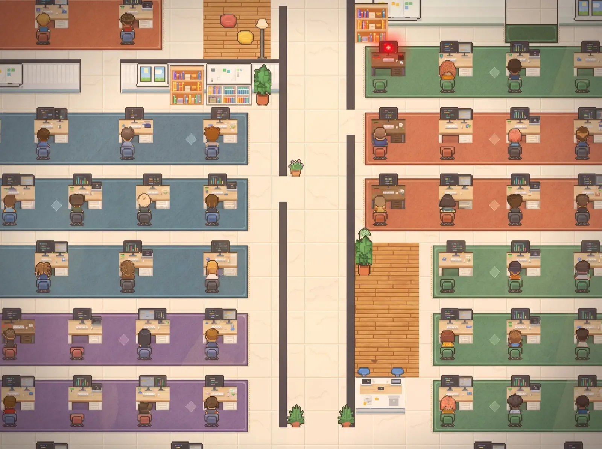

01 · Fila
Ninguém fica esperando
Quem espera há mais tempo sobe para o topo.
- 1.1Grupo e conversa individual do mesmo cliente aparecem juntos.
- 1.2Mensagens seguidas viram um bloco só.
- 1.3O áudio já chega transcrito.

Esperando vocêmais antigo primeiro5 na fila
- RZRenata ZanettiFaltou só a integração com o pagamento3d 22h
- JFJade FinançasRecebi, vou olhar ainda hoje3d 8h
- OEÓrbita Educaçãoáudio · transcrito3d 1h
- PSPriscila SiqueiraConsegue me mandar a versão nova da proposta?1d 2h
- KTKairos TechMandei o print do erro aqui19h 32m